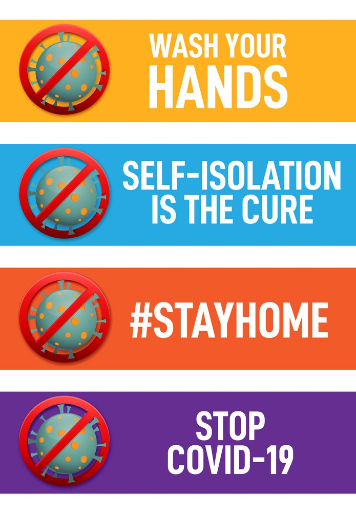

Proper health and hygiene chart according to WHO guidelines
Living a healthy life can do much more than make you feel better today — it can help you avoid a plethora of health problems as you age. Small, simple changes to your daily life can pay big dividends in the long run. With this in mind, we turned to several of our Physiquality partners to ask what they thought were the most important things to do and avoid on the pathway to a long and healthy life. See our list of expert's below. Here’s what they had to share :
(1) Do smile. Smiling changes your attitude and can change your outlook on the day. Scientific American even collated some studies that proved smiling can actually make you feel better.
(2) Don’t worry or stress. When you get distracted by what might happen or what others are doing or have done, it’s difficult to focus on what you need to do on any given day. In the long run, stress can even damage the body, having been linked to heart disease, diabetes, and more. It’s healthier to approach each day with a fresh mind (and smile!), creating a list of priorities and approaching it with a clear head. And if you don’t finish your list that day, congratulate yourself for what you have accomplished, rather than berating yourself for what didn’t get finished.
(3) Drink plenty of water.Do drink plenty of water. Throw out the bottled soda and packets of powdered drinks and stock up on water — bottled, filtered, sparkling or straight from the tap. While there’s been some dispute in the last few years about how much exactly to drink per day, there’s no question that water is essential to your body. Bonus: drinking water has also been shown to help people lose weight!
(4) Don’t fill your body with toxins. Just about everyone that we asked made cigarette smoking their number-one no-no. While most people can list the evils of tobacco from memory — emphysema, lung cancer and cardiovascular disease usually topping the list — our society is still much more accepting of drinking. While most health experts agree that drinking one to two glasses of wine on occasion is not only acceptable but even beneficial for your health, many people often forget the dangers of overdrinking. In the short term, drinking more than one alcoholic drink per hour can lead to sickness, blackouts and alcohol poisoning, as well as such poor judgment as drunk driving. In the long term, excessive imbibing and alcohol abuse can lead to liver disease, pancreatitis, neuropathy and death.
(5) Do eat breakfast. People who eat breakfast are more likely to maintain a healthy diet and lifestyle, and it’s been shown that kids score better on tests and in school after eating breakfast. Opt for 300-500 calories, including protein and at least one or two servings of fruits or vegetables.
(6) Don’t yo-yo diet. Cycles of excessive dieting and binging are hard on your body and can lead to such metabolic disorders as hypertension and diabetes. With each successive cycle, your body will take longer to lose weight and will regain it more quickly. It’s much better to adjust your lifestyle gradually, building your exercise routine slowing and changing your eating habits towards healthier food, which leads to…
(7) Eat your fruit and vegetables.Do eat more real, fresh food in the form of fruits and vegetables, and less highly processed and packaged foods. Processed foods come with a long list of ingredients that are intended to lengthen the shelf life of these food-like products, not your health and longevity. In addition, sugar has been under scrutiny recently as a toxic ingredient that, if overconsumed, can lead to fatty liver, a key component of obesity. The good news is that the push for fresh produce has led to many farmers markets and better access to fruits and vegetables across the U.S.; some doctors are even prescribing better nutrition as a way to remind patients how important it is for their health.
(8) Don’t keep tempting foods in your kitchen. Studies have shown that communities with lots of fast food places but few grocery stores have higher levels of obesity. The same logic can be applied to your own home — if you stock your pantry with unhealthy foods like chips and cookies, what are you likely to turn to for a snack when you get a craving in the middle of the afternoon? It’s easier to use your willpower in the grocery store, stocking your home with healthy fruit and vegetables; when you get that craving but the fatty snacks aren’t there to tempt you, you’ll be much more likely to eat the healthy food.
(9) Do take a break during the workday for a quick walk or stretch at your desk. Sitting at your desk for hours at a time can cause eye strain, back pain and stress. It’s been shown that simple activities like taking a walk around the office or even bending down to tie your shoelaces will vary your heart rate. You can also climb the stairs to the next floor to use the bathroom or walk across the office to talk to someone rather than emailing.
(10) Don’t spend time with negative people. We all know someone who will consistently point to the negative: A new job is a bad move because you’ll have a longer commute; a new boyfriend means less time with others. Spending time with someone like this eventually gets you down as well; it’s almost impossible to ignore the negativity. Try to remind them about the good things in life, and then quickly walk away to focus on the positive. You might feel guilty about walking away, but your mood and outlook for the rest of the day will be much better.
(11) Exercise!Do exercise. We all know that exercise is good for us. Regular, moderate-intensity physical activity isn’t just for getting fit — it can also significantly lower your risk of cancer, heart disease, diabetes, osteoporosis, arthritis and many other diseases, while keeping your brain active as well. If you’re busy and don’t know how to fit exercise into your routine, walking is the easiest form of exercise that everyone can do. Walking 10,000 steps a day can help reduce your waistline and lower the risk of heart disease and cancer.
(12) Don’t isolate yourself socially. It’s been known for a while that people with healthy relationships live longer, but now some studies are showing that people without a social community have greater health risks. According to one study, “Weak social ties are more harmful than not exercising and twice as risky as being obese.” Connecting with people is one of the five things people who live to be 100 had in common.
(13) Do activities you actually enjoy. This sounds easier than it sometimes can be. We’ve all signed up for new classes at the gym or a new sports league with high hopes, but may dread the actual experience. You’re much more likely to stick to your new routine if you enjoy it, and you’ll benefit both mentally and physically.
(14) Take a break and walk the dog.Don’t sit for more than 2-3 hours at a time. We already mentioned leaving your desk from time to time at work. The same goes for when you get home, especially if you sit at a computer all day. Inactivity can lead to heart disease and weight gain. Take a look at what your city or town has to offer — go to a museum, play at the park with your kids, or simply walk the dog. The more active you are, the healthier you’ll be.
(15) Do try a new activity. Exercise both your mind and body by trying something new. Studies have shown that the more your brain learns, the more we creative become at home and at work. Tackle that new Pilates class offered by your town’s parks and recreation department. Buy a yoga DVD and learn some new poses. By expanding your mind, and working out at the same time, you’ll be better prepared for problems down the road, armed with a healthy body and a mind ready to look at all sides of any issue.

Government's Social Helpdesk |
 |
|---|